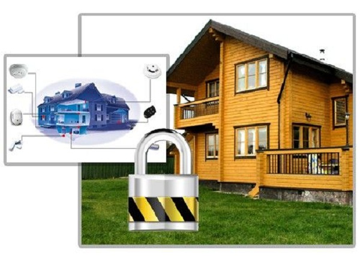

Приглашаем всех детей и уже не детей, принять участие в конкурсе на Вотчине. Мы объявляем конкурс рисунков-проектов "Лето вместе".

Безопасность дома может обеспечиваться различными способами, а надежность в этом вопросе требует комплексного подхода.

Здоровый образ жизни – тренд современности. Быть здоровым, питаться свежими и свободными от «химии» продуктами, быть ближе к природе – модно, полезно, выгодно!
Безопасность дома может обеспечиваться различными способами, а надежность в этом вопросе требует комплексного подхода.
Прежде всего, разберёмся, от каких же опасностей нужно защищаться. Основной угрозой, как и во все времена, является огонь, и, в первую очередь, нужно позаботиться о пожарной сигнализации, системах пожаротушения и системах молниезащиты. Дальше следуют такие опасности техногенного характера, как утечка газа или авария в системе водоснабжения, влекущие за собой затопление дома и порчу имущества.
Многие люди забывают о подобных опасностях и считают основной угрозой вторжение в дом злоумышленников. Такое мнение ошибочно, нужно уделить внимание всем потенциальным угрозам и создать комплексную систему защиты.
По мнению специалистов, безопасность загородного дома обеспечивают: противопожарные двери, решетки, въездные ворота, оборудованные электромагнитной защелкой и одной-двумя камерами наблюдения; переговорное устройство (домофон); система пожарных извещателей и оповещателей, различные датчики.
При выборе оптимальной системы защиты необходимо учитывать следующие факторы: размеры дома (вместе с участком), местоположение (удаленность от постоянного местожительства, близость каких-либо населенных пунктов), вероятность угрозы и финансовые возможности хозяина.
Далее по пунктам, как на уроках ОБЖ:
• Покидая дачный участок необходимо потушить огонь в печи, камине, мангале – убрать находящуюся внутри золу, выключить все электрооборудование и проверить баню.
• Регулярно проверяйте электрооборудование. Не используйте искрящие электроприборы.
• Никогда не оставляйте непотушенной сигарету, ни в коем случае не бросайте спички и окурки в сухую траву, ветошь или на деревянный настил.
• Никогда не сжигайте прошлогоднюю траву и мусор непосредственно на дачном участке.
• Сжигайте мусор в металлической бочке, в безопасном месте под постоянным контролем в безветренную погоду.
• Место, где готовится шашлык (стационарный или переносной мангал, барбекю), должно быть вдалеке от строений и рядом не было ничего, что могло бы загореться. Не разжигайте мангал под кронами деревьев и на земле, покрытой сухой хвоей и листвой.
• Позаботьтесь об оборудовании дома качественным заземлением и защитой от молний.
В быту часто используется система автоматического порошкового пожаротушения. Вот, что о ней говорят специалисты:
«Модули порошкового пожаротушения являются оптимальным средством автоматического пожаротушения в бытовом использовании. Порошковые модули в сравнении с другими видами автономных огнетушителей, отличаются экологической безопасностью, невысокой ценой, простотой обслуживания. Кроме этого, большая часть модулей порошкового пожаротушения способна работать как в режиме самозапуска (если превышена критическая температура), так и в режиме электрозапуска (по сигналам пожарных датчиков). Обычно модули порошкового огнетушения устанавливают в пожароопасных и технических помещениях: гараж, котельная, электрощитовая.
Модули порошкового пожаротушения вкупе с электронным блоком управления могут быть выделены в отдельную систему автоматического пожаротушения. Если приёмно-контрольный прибор имеет выходы управления автоматическими системами пожаротушения, то система автоматического пожаротушения может быть составной частью системы охранно-пожарной сигнализации».
Добавим, что в домах с большими участками для максимальной надежности и эффективности можно выделять несколько рубежей защиты и одновременно использовать как охранно-пожарные системы с магнитно-контактными и инфракрасными датчиками, так и системы с видеокамерами, видеодомофоном, компьютером, регистрирующими и коммутирующими устройствами. Вообще, считается нормальным, если затраты на защиту дома достигают 10-15% от его общей стоимости, включая стоимость всего находящегося там имущества.
С пожарной безопасностью разобрались, перейдем к угрозам вторжения, к слову, они маловероятны – на Вотчине круглосуточно работает служба охраны. Но, как говорится, предупрежден – значит вооружен.
Простейшие меры по сохранению недвижимости
1. Установите дверь с хорошими замками, способными выдержать до 5 минут “работы” профессионала. Установка замков и дверей должна проводиться сотрудниками специализированной крупной фирмы, а не людьми со стороны.
2. Также необходимо защитить окна. Существуют так называемые «антивандальные стеклопакеты», которые позиционируются как современная альтернатива защитным решеткам. Но есть мнение, что раскрываются они очень легко простейшим инструментом, поэтому рассчитывать на их прочность без дополнительных мер защиты – опрометчиво.
3. Из серии «дешево и сердито» – установить сирену «Ревун», которая срабатывает в случае взлома двери дома.
4. Использование муляжей. Иногда защищать дом помогают дешевые муляжи охранных систем: поворачивающиеся время от времени игрушечные видеокамеры и разные устройства на батарейках с попеременно мигающими лампочками.
И еще. Не забывайте, о страховых компаниях – потратив небольшую сумму на страховой полис, вы приобретёте надёжную защиту своего имущества от возможных бед.
Друзья, напомним, что кроме вас о безопасности позаботится наша служба охраны, которая работает на территории поселка Вотчина Country Club. Мы сможем обеспечить сохранность стройматериалов, построек, имущества и покой вашей семьи.
Служба охраны это – 5 постов охраны, круглосуточное видеонаблюдение, тревожная, кнопка для каждого дома, патрулирование территории.
|  |
Error: Undefined variable: category_text File: /var/www/votchina.su/data/www/votchina.ru/templates/template-news.php (65)